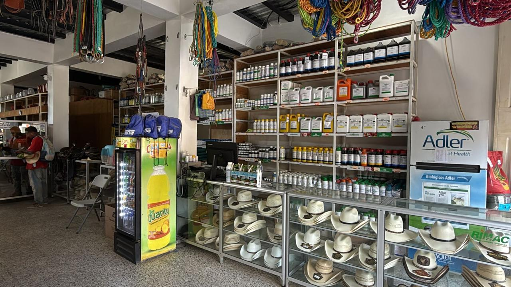
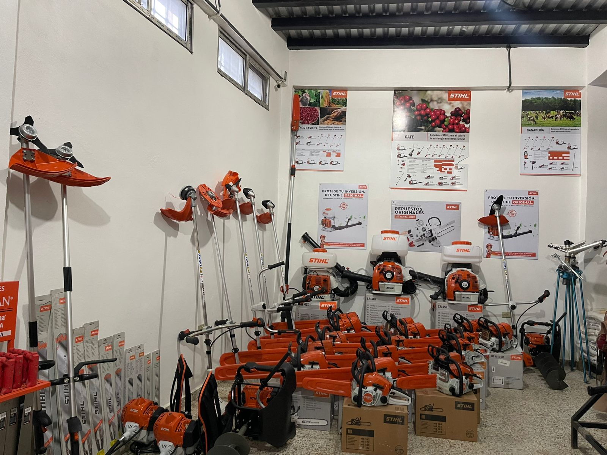

Fertilizantes, semillas, insumos, herramientas y maquinaria para el campo.
Antibióticos, desparasitantes, vitaminas, minerales, concentrados y accesorios para animales.
Motores, bombas de agua y equipos agrícolas.
Somos distribuidores autorizados, contamos con máquinas y gran variedad de repuestos totalmente originales.
En Agropecuaria El Potrillo nos dedicamos a brindar soluciones confiables e integrales. Contamos con una amplia variedad de medicamentos veterinarios, fertilizantes, semillas, concentrados, maquinaria agrícola, motores, bombas de agua y productos originales. Nuestro compromiso es atender a cada cliente con responsabilidad, confianza y un servicio personalizado, ayudando a productores, ganaderos y familias a encontrar las mejores soluciones para sus necesidades.


Calle del Comercio, a la par de Mercadito Andrea #1, cerca del Monumento La Paz, El Porvenir, Francisco Morazán
9338-9936 | 9640-4032
✉ agropecuariaelpotrillo@gmail.com
Lunes a sábado: 7:00 AM - 5:00 PM